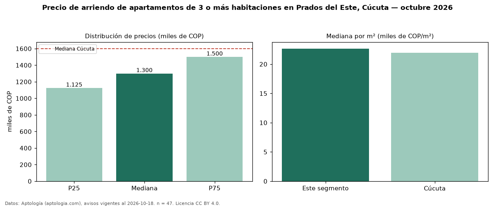

Precio de arriendo de apartamentos de 3 o más habitaciones en Prados del Este, Cúcuta — octubre 2026
COP 1,30 millones al mes es el canon mediano de apartamentos de 3 o más habitaciones en arriendo en Prados del Este, Cúcuta (n = 47 avisos). Frente a la mediana de Cúcuta para apartamentos de 3 o más habitaciones (COP 1,60 millones), queda 19 % por debajo. Por metro cuadrado, la mediana es COP 22.654/m² al mes (n = 46 avisos con área), 3 % por encima de Cúcuta (COP 21.952/m²). Son 76 % de los 62 avisos de apartamentos en arriendo de la zona, cuya mediana general es COP 1,29 millones (+1 %). Con el precio por m² de venta del mismo segmento (COP 4,11 millones/m²), la rentabilidad bruta implícita es 6,6 % anual (aproximación con medianas de ofertas distintas). El área mediana anunciada es 56 m². La administración mediana declarada es COP 220.000 al mes (n = 21), aparte del canon. El estrato más frecuente es 3 (81 % de los avisos con estrato). Datos: Aptología (aptologia.com), CC BY 4.0 — https://www.aptologia.com/arriendo/cucuta/prados-del-este. Archivos: PDF, CSV con las cifras y gráfica PNG.

| Avisos únicos | 47 |
|---|---|
| Percentil 25 | COP 1.125.000 |
| Mediana | COP 1.300.000 |
| Percentil 75 | COP 1.500.000 |
| Mediana por m² | COP 22.654 |
Fuente: avisos vigentes de portales inmobiliarios recopilados por Aptología, deduplicados (mínimo 30 avisos únicos por celda). Precios pedidos, no cerrados. Fecha: 2026-10-18.